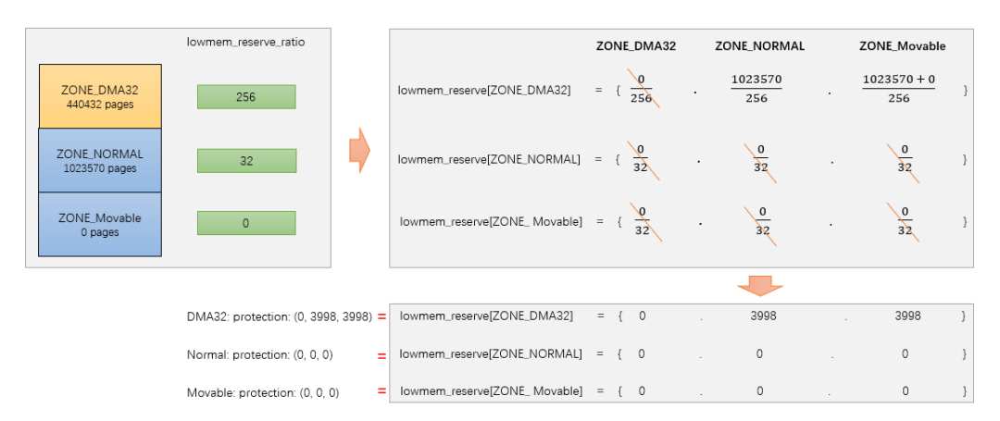

相关结构体
核心结构体
{kind=link}
- struct pglist_data: 节点的描述，arm64 UMA架构中，只有一个节点。
- struct zone node_zone[]：是一个数组，每个元素表示一个内存区域所对应的 struct zone 结构体。从名字可以看出，此数组的长度为 MAX_NR_ZONES，即它最多可以包含 MAX_NR_ZONES 个元素，因此，此数组通常用于描述系统所能支持的所有内存区域。这些内存区域可能包括不同类型（例如，DMA、普通或高端）和大小的内存区域。
- struct zonelist node_zonelists[]：仅在 NUMA 架构系统中使用。它也是一个数组，每个元素表示一个 NUMA 节点所对应的内存区域所组成的链表。它是为了支持 NUMA 系统中的内存分配而设计的。在 NUMA 系统中，每个节点只能访问一部分物理内存，因此需要将所有可访问的内存区域组成一个链表供内存分配器使用。从名字可以看出，此数组的长度为 MAX_ZONELISTS，即它最多可以包含 MAX_ZONELISTS 个元素，因此，此数组通常用于描述系统所支持的所有 NUMA 节点。
- struct lruvec lruvec：用于处理该节点的页面回收
- struct per_cpu_pageset: pageset用于实现冷热分配器，内核页时热的意味着页已经加载到CPU高速缓存，与在内存中的页相比，其数据能够更快地访问。相反，冷页则不再高速缓存中，在多处理器系统上，每个CPU都有一个或多个高速缓存。
- free_area:用于实现伙伴系统，每个数组元素都表示某中固定长度的一些连续内存区。对于包含在每个区域的空闲内存页的管理。
free_area
{kind=link}
上图描述出了Node->zone->free_area->page之间的关系。
struct zone {
......
struct free_area free_area[MAX_ORDER]; //存储着不同长度的空闲区域
......
}
伙伴系统中是以2^n次方来对内存进行分配的，因此系统中是以2^n次方来组织链表结构的。例如struct free_area[2]对应的就是2^n个page内存块链表。
struct free_area {
struct list_head free_list[MIGRATE_TYPES];
unsigned long nr_free;
}
- nr_free指定了当前内存区中空闲页块的数目。
- free_list用于连接空闲页的链表，每种迁移类型都对应于一个空闲列表。
- free_area[]确定连续内存的级数后，还会根据其MIGRATE类型来进行分类。这样做是为了便更好的管理内存，以减少内存碎片。
{kind=link}
基本原理
为了解决内存碎片的问题，linux内核使用的伙伴系统算法。伙伴系统算法是一个高效且简单的内存分配策略，当我们找到待分配内存的zone后，内核将从对应zone的空闲链表中去分配内存。在释放内存是，内核将相应的内存还回相应的内存还回对应的zone空闲内存链表中。
如上图所示free_area数组大小为MAX_ORDER，也就是free_area数组存放着MAX_ORDER个链表，每个链表的元素存放的页块大小为2的n次幂，其中n为该链表在free_area数组中的索引位置。在同一个order内存块中，有根据MIGRATE类型将page存放在不同的链表中。
伙伴系统内存块分配
如果内核要分配2^n个页内存大小，伙伴系统处理方式如下： （1）检查对应的free_area[n]索引（如果是3，则是free_area[3]）的数组，如果在其索引下的链表有空闲内存块，则返回。 （2）如果没有找到满足要求的内存块，则查找n+1数组索引（free_area[4]），若存在空闲内存块，将n+1索引的内存块拆分成大小相等且连续的两块内存，将一块内存返回给内核使用，另外一块内存添加到n的数组索引链表中。 （3）若n+1数组索引中依旧没有找到，则继续向n+2数组索引寻找，再依次向下拆分，直至满足要求位置。
伙伴系统内存块合并

当系统中存在两块大小一样，内存物理地址连续将会试图合并添加到上一阶。上图中在free_area[2]中有5个空闲内存块，当非空闲内存块PFN=6即将释放是，伙伴系统将会进行检查，发现PFN=6与PFN=1内存块大小一样且连续，则进行合并添加到order=3的上一阶连续内存块中，同时在order=3中会继续搜索，看是否满足可以合并添加到order=4中，直到不能合并为止。struct page中有几个成员变量与伙伴系统有关系。
- __mapcount:标记page是否在伙伴系统中
- private：页块中的第一页private字段存放了内存块的order值
- index：存放MIFRATE的类型
- __refcount：用户使用计数
内存块迁移
伙伴系统能一定程度解决内存碎片问题，但是系统运行久之后，内核会大量的进行内存的分配和释放工作，这依旧会导致内存碎片。

如上图，假定内存由60页组成，左侧的地址空间散布着空闲页，尽管25%的物理内存仍然未分配，但最大的连续空闲区只有一页。这对用户空间应用程序是没问题（其内存通过页表映射，即使空闲页在物理内存中分布如何，应用程序看到的内存是连续的）。右图给出的情形中，空闲页和使用页的数目与作图相同，但所有空闲页都位于一个连续区中。为了缓解这种内存碎片问题，内核伙伴系统引入了MIGRATE。下面是Linux内核中用于描述不同内存区域的迁移类型常量，表示对应区域中页面的可移动性和重要性等属性。
- MIGRATE_ISOLATE:表示这个内存区域的页面不可移动，并且需要独立出来，例如用于设备DMA。
- MIGRATE_CMA:表示这个内存区域的页面被保留用于连续内存分配（CMA），通常用于一些嵌入系统中。
- MIGRATE_HIGHATOMIC:表示这个内存区域的页面被预期会经常进行搞优先级内存操作，例如解锁页需要使用硬件原子操作。
- MIGRATE_MOVABLE:表示这个内存区域的页面可以自由被迁移，通常用于用户空间的虚拟内存或者支持虚拟机的内存管理场景。
- MIGRATE_RECALAIMABLE:表示这个内存区域的页面可以被回收，例如包含缓存页，匿名页等。
- MIGRATE_UNMOVABLE:表示这个内存区域的页面不可移动，例如内核代码，内核数据等。 在伙伴系统分配连续内存块是，当一个指定迁移类型所对应的链表中没有空闲内存块时，内核将会按照静态定义的顺序在其他迁移类型的链表中进行寻找。
static int fallbacks[MIGRATE_TYPES][3] = {
[MIGRATE_UNMOVABLE] = { MIGRATE_RECLAIMABLE, MIGRATE_MOVABLE, MIGRATE_TYPES },
[MIGRATE_MOVABLE] = { MIGRATE_RECLAIMABLE, MIGRATE_UNMOVABLE, MIGRATE_TYPES },
[MIGRATE_RECLAIMABLE] = { MIGRATE_UNMOVABLE, MIGRATE_MOVABLE, MIGRATE_TYPES },
#ifdef CONFIG_CMA
[MIGRATE_CMA] = { MIGRATE_TYPES }, /* Never used */
#endif
#ifdef CONFIG_MEMORY_ISOLATION
[MIGRATE_ISOLATE] = { MIGRATE_TYPES }, /* Never used */
#endif
};
初始化
初始化相关数据结构
{kind=link}
伙伴系统相关数据结构主要在zone_sizes_init中完成，主要的几点如下： （1）为每个zone区域的free_area[]数组中的MIGRATE free list链表初始化。 （2）为每个zone区域所有的页框描述符struct page（分配）初始化。 （3）为每个zone区域中所有的pageblock设定迁移类型。 （4）为每个内存节点初始化可使用的备用内存node_zonelists。 为每个zone区域的每cpu成员pageset初始化。
memblock内存释放到伙伴系统

页面分配器
分配器API
就伙伴系统接口而言，与c库中的malloc函数不同的是，这里分配的参数是以分配阶为参数，即伙伴系统将在内存中分配2^order页。
分配接口
{kind=link}
分配掩码
区域修饰符
{kind=link}
移动修饰符
{kind=link}
水线修饰符

回收修饰符

alloc_pages

alloc_pages最终会调用到__alloc_pages，分配物理页面首先会先尝试从伙伴系统中进行快速分配，如果快速分配不成功会进入慢速分配。快速分配和慢速分配的区别？
prepare_alloc_pages
用于初始化页面分配器中用到的参数，确定首选的zone等。在页面分配器中，使用alloc_context数据结构来用于各函数之间的参数传递。
#include “mm/internal.h”
struct alloc_context {
struct zonelist *zonelist;
nodemask_t *nodemask;
struct zoneref *preferred_zoneref;
int migratetype;
enum zone_type highest_zoneidx;
bool spread_dirty_pages;
};
- zonelist: 分配页面的区域列表
- nodemask：指定的node，如果没有指定则在所有节点中进行分配
- prefered_zoneref：指定首先分配的区域
- migratetype:要分配的迁移类型
- highest_zoneidx:将分配限制为小于区域列表中指定的高区域
- spread_dirty_pages:脏区平衡相关
static inline bool prepare_alloc_pages(gfp_t gfp_mask, unsigned int order,
int preferred_nid, nodemask_t *nodemask,
struct alloc_context *ac, gfp_t *alloc_gfp,
unsigned int *alloc_flags)
{
ac->highest_zoneidx = gfp_zone(gfp_mask);
ac->zonelist = node_zonelist(preferred_nid, gfp_mask);
//（1）确定首选内存节点的zonelist，一个内存节点包含两个zonelist，一个是本地的，另外一个是远端的，对于arm64架构只有一个。
ac->nodemask = nodemask;
ac->migratetype = gfp_migratetype(gfp_mask);
//（2）根因分配掩码来确定获取内存的迁移类型
if (cpusets_enabled()) {
*alloc_gfp |= __GFP_HARDWALL;
/*
* When we are in the interrupt context, it is irrelevant
* to the current task context. It means that any node ok.
*/
if (in_task() && !ac->nodemask)
ac->nodemask = &cpuset_current_mems_allowed;
else
*alloc_flags |= ALLOC_CPUSET;
}
fs_reclaim_acquire(gfp_mask);
fs_reclaim_release(gfp_mask);
might_sleep_if(gfp_mask & __GFP_DIRECT_RECLAIM);
if (should_fail_alloc_page(gfp_mask, order))
return false;
*alloc_flags = gfp_to_alloc_flags_cma(gfp_mask, *alloc_flags);
/* Dirty zone balancing only done in the fast path */
ac->spread_dirty_pages = (gfp_mask & __GFP_WRITE);
/*
* The preferred zone is used for statistics but crucially it is
* also used as the starting point for the zonelist iterator. It
* may get reset for allocations that ignore memory policies.
*/
ac->preferred_zoneref = first_zones_zonelist(ac->zonelist,
ac->highest_zoneidx, ac->nodemask);
//（3）确定首选的zone
return true;
}
快速路径分配

遍历zonelist中的zone，扫描zone的方向是从高端zone到低端zone，大部分情况不一定扫描zonelist中所有的zone，而是从首选zone(prefered_zone)开始扫描，首选zone是通过gfp_mask换算。 alloc_context是一个非常重要的参数，其存储了zone从哪里开始扫描，内存分配的迁移类型等。zone_watermark_ok将会检测在分配内存时需要判断zone的水位情况以及是否满足分配连续大内存块的需求，如果不符合则分配失败。 rmqueue会从伙伴系统中获取内存，如果对应的order不满足，就会从高一阶的内存块区获取。在调用requeue分配内存时，当分配的时单个物理页面(order=0)，将会调用rmqueue_pcplist函数，从Per-CPU变量per_cpu_pages中分配页面。per_cpu_pages是一个Per-CPU变量，即每个CPU都由一个本地的per_cpu_pages变量，这个per_cpu_pages数据结构理由一个单页面链表，里面存放一小部分单个物理页面，当系统需要单个物理页面是，就从本地CPU的Per-CPU变量链表中直接获取物理页面，这样就可以快速分配内存，减少zone中相关锁的操作（在多个节点中访问内存会有锁保护）。
慢速路径分配
{kind=link}
水位管理
 水位管理的设置主要在init_per_zone_wmark_min函数中实现，如下：
水位管理的设置主要在init_per_zone_wmark_min函数中实现，如下：
int __meminit init_per_zone_wmark_min(void)
{
（1）计算min_free_kbytes值
calculate_min_free_kbytes();
（2）设置各zone的水位值
setup_per_zone_wmarks();
（3）zone状体阈值，用于内存压缩，Per-CPU相关？
refresh_zone_stat_thresholds();
（4）设置各zone区预留内存
setup_per_zone_lowmem_reserve();
#ifdef CONFIG_NUMA
setup_min_unmapped_ratio();
setup_min_slab_ratio();
#endif
khugepaged_min_free_kbytes_update();
return 0;
}
相关数据结构
#include "common/framework/platform_init.h"
struct zone {
......
unsigned long _watermark[NR_WMARK];
unsigned long nr_reserved_highatomic;
long lowmem_reserve[MAX_NR_ZONES];
atomic_long_t managed_pages;
unsinged long spanned_pages;
unsinged long present_pages;
......
};
enum zone_wtermarks {
WMARK_MIN,
WMARK_LOW,
WMARK_HIGH,
NR_WMARK,
};
#define min_wmark_pages(z) (z->watermark[WMARK_MIN])
#define low_wmark_pages(z) (z->watermark[WMARK_LOW])
#define high_wmark_pages(z) (z->watermark[WMARK_HIGH])
- _watermark[NR_WMARK]:存储水位等级对应的内存容量
- nr_reserved_highatomic:该内存区域内预留内存的大小，其大小=watermark[WMARK_MIN]？
- lowmem_reserve[MAX_NR_ZONES]：每个区域必须为自己保留一定的物理页数量，防止高位内存区域对自己内存空间进行过多的挤压。如当NORMAL区域分配不到内存是，会往下分配DMA区域，DMA区域要保留一定空间不能让NORMAL区域的挤压。
- managed_pages: 通过buddy伙伴系统管理的所有可用页，=present_pages-reserved_pages
- spanned_pages:zone区域所有的物理页，包含空洞，=zone_end_pfn-zone_start_pfn
- present_pages:zone区域可用的所有物理页，包含reserved_pages，=spanned_pages-hole_pages
- WMARK_HIGH:当物理内存区域的剩余内存容量高于_watermark[WMARK_HIGH]时，说明物理内存区域中的内存容量非常充足，内存分配没有压力
- WMARK_LOW:当剩余内存容量介于_watermark[WMARK_LOW]与_watermark[WMARK_HIGH]之间时，说明此时内容容量有点危险了，内存分配面临一定压力，但是还可以满足进程的内存分配要求，当给进程分配完内存之后，就会唤醒kswapd进程开始进行内存回收，知道剩余内存高于_watermark[WMARK_HIGH]为止。分配内存时会触发内存回收，但是分配的进程本身不会被阻塞，属于异步回收内存。
- WMARK_MIN:当剩余内存容量低于_watermark[WMARK_MIN]时，说明此时的内容容量非常危险了，如果进程再此时请求分配内存，内核会进行阻塞式直接内存回收，直到内存容量大于_watermark[WMARK_LOW]给予分配。_watermark[WMARK_MIN]以下的内存容量时预留给内核在紧急情况下使用的，这部分内存对应的时nr_reserved_highatomic。
水位线的计算概述
WMARK_HIGH,WMARK_LOW,WMARK_MIN这个三个水位线的数值是通过内核参数/proc/sys/vm/min_free_kbytes为基准分别计算处理的，单位是KB。min_free_kbytes是系统保留空闲内存的最低限，_watermark[WMARK_MIN]的是通过min_free_kbytes计算出来的。
- _watermark[WMARK_MIN]=f(min_free_kbytes)
- _watermark[WMARK_LOW]=1.25*_watermark[WMARK_MIN]
- _watermark[WMARK_HIGH]=1.5*[WMARK_LOW]
min_free_kbytes计算
在函数calculate_min_free_kbytes用于计算min_free_kbytes的值，接下来线看看min_free_kbytes内核是如何计算出来的。如下（如果有DMA32也需要包含进去），初始化时high=0，所以实际等于ZONE_DMA+ZONE_NORMAL中managed_pages的和。
{kind=link}
{kind=link}
static unsigned long nr_free_zone_pages(int offset)
{
struct zoneref *z;
struct zone *zone;
/* Just pick one node, since fallback list is circular */
unsigned long sum = 0;
struct zonelist *zonelist = node_zonelist(numa_node_id(), GFP_KERNEL);
（1）对每个zone做计算，将每个zone中低于high水位的可用内存做累加，得到如上图的A+B。初始化时，high_pages实际=0.
for_each_zone_zonelist(zone, z, zonelist, offset) {
unsigned long size = zone_managed_pages(zone);
unsigned long high = high_wmark_pages(zone);
if (size > high)
sum += size - high;
return sum;
}
unsigned long nr_free_buffer_pages(void)
{
return nr_free_zone_pages(gfp_zone(GFP_USER));
}
void calculate_min_free_kbytes(void)
{
unsigned long lowmem_kbytes;
int new_min_free_kbytes;
（2）低位内存区域（非HIGH_MEM，实际上64没有HIGH_MEM）总容量有页数转为KB。
lowmem_kbytes = nr_free_buffer_pages() * (PAGE_SIZE >> 10);
（3）对lowmem_kbytes*16再进行开方
new_min_free_kbytes = int_sqrt(lowmem_kbytes * 16);
（4）user_min_free_kbytes是用户设置的值（/proc/sys/vm/min_free_kbytes），算出来的值与用户设置的值进行比较取大值，但是最终范围需要介于128~262144KB之间
if (new_min_free_kbytes > user_min_free_kbytes) {
min_free_kbytes = new_min_free_kbytes;
if (min_free_kbytes < 128)
min_free_kbytes = 128;
if (min_free_kbytes > 262144)
min_free_kbytes = 262144;
} else {
pr_warn(\"min_free_kbytes is not updated to %d because user defined value %d is preferred\\n\",
new_min_free_kbytes, user_min_free_kbytes);
}
}
水位线设置
函数setup_per_zone_wmarks用于计算watermark[min,low,high]的值。
static void __setup_per_zone_wmarks(void)
{
（1）将min_free_kbytes转为page为单位
unsigned long pages_min = min_free_kbytes >> (PAGE_SHIFT - 10);
unsigned long lowmem_pages = 0;
struct zone *zone;
unsigned long flags;
/* Calculate total number of !ZONE_HIGHMEM pages */
for_each_zone(zone) {
if (!is_highmem(zone))
lowmem_pages += zone_managed_pages(zone);
}
for_each_zone(zone) {
u64 tmp;
(2)计算出水线挡位基础值tmp=
(u64)min_free_kbytes/ 4 * zone_managed_pages(zone) / lowmem_pages
如果只有一个zone的话，tmp= min_free_kbytes / 4
spin_lock_irqsave(&zone->lock, flags);
tmp = (u64)pages_min * zone_managed_pages(zone);
do_div(tmp, lowmem_pages);
(3)HIGHMEM_ZONE水线挡位计算
if (is_highmem(zone)) {
/*
* __GFP_HIGH and PF_MEMALLOC allocations usually don\'t
* need highmem pages, so cap pages_min to a small
* value here.
*
* The WMARK_HIGH-WMARK_LOW and (WMARK_LOW-WMARK_MIN)
* deltas control async page reclaim, and so should
* not be capped for highmem.
*/
unsigned long min_pages;
min_pages = zone_managed_pages(zone) / 1024;
min_pages = clamp(min_pages, SWAP_CLUSTER_MAX, 128UL);
zone->_watermark[WMARK_MIN] = min_pages;
} else {
/*
* If it\'s a lowmem zone, reserve a number of pages
* proportionate to the zone\'s size.
*/
zone->_watermark[WMARK_MIN] = tmp;
(4)非HIGHMEM_ZONE 水位线min挡位的计算
}
/*
* Set the kswapd watermarks distance according to the
* scale factor in proportion to available memory, but
* ensure a minimum size on small systems.
*/
（5）计算各个zone的low和hig挡位的值，挡位值tmp会受用户节点/proc/sys/vm/watermark_scale_factor的影响，让用户可调节min到low和high间的比例关系。tmp为min与low和high之间的差值，mult_frac(zone_managed_pages(zone),watermark_scale_factor, 10000)=zone_managed_pages(zone)* (watermark_scale_factor/10000)，即总内存大小*（watermark_scale_factor/10000），因此tmp取的是 tmp >> 2和（watermark_scale_factor/10000)的最大值，意思就是即使用户通过节点修改，但是值算出来小，还是会选择原计算出来的差值。
tmp = max_t(u64, tmp >> 2,
mult_frac(zone_managed_pages(zone),
watermark_scale_factor, 10000));
zone->watermark_boost = 0;
zone->_watermark[WMARK_LOW] = min_wmark_pages(zone) + tmp;
zone->_watermark[WMARK_HIGH] = min_wmark_pages(zone) + tmp * 2;
spin_unlock_irqrestore(&zone->lock, flags);
}
/* update totalreserve_pages */
calculate_totalreserve_pages();
}
watermark_scale_factor
min水位到low和high水位之间的距离，可以通过调节节点/proc/sys/vm/watermark_scale_factor来控制，内存占比计算方式为范围为watermark_scale_factor/10000，意思是min与low的差值为总内存大小*。
（watermark_scale_factor/10000），watermark_scale_factor取值范围10~1000，所以占比范围0.1%~10%（10/10000~1000/10000）。因此min和low的差值为总内存大小*（0.1%~10%）。
小结，对应水线的low和high为止分两种情况： - 若min_free_kbytes偏大，则水线low到high区间长度由min_free_kbytes决定， - 若min_free_kbytes偏小，则水线low到high区间长度由watermark_scale_factor决定。

{kind=link}
{kind=link}
当分配内存发现剩余空间低于低水位，将会唤醒kswpad内核线程进行内存回收,回收过程是异步的，如果low与min水位差值较小，即使kswpad启动，但是回收过程是缓慢，当出现突发大内存分配时，可能直接触发到min水位，这时候就会触发阻塞式内存回收（Direct Reclaim），所以需要进行合理的调整low和min之间的差值，因此引入了watermark_scale_factor，该值就是进行人为调整low和min之间的差值，当差值较大时，中间空余空间较大，也能使kswpad提前进行唤醒回收内存。 可以观察/proc/vmstat中的allocstall计数，当进程频繁发生allocstall或者kswapd过早进入休眠状体，说明min和low水位差值太小，无法应对突发内存分配。即可通过watermark_scale_factor用于调整kspwad的激进程度。
cat /proc/vmstat |grep -E 'allocstall|kswapd_low_wmark_hit_quickly'
allocstall_dma 0
allocstall_dma32 0
allocstall_normal 4
allocstall_movable 11
kswapd_low_wmark_hit_quickly 611
如上，如果这些数值在短时间内是否有增加，如果是，则说明频繁发生Direct Recleam，需要调大watermark_scale_factor。 思考：如果min和low水位线差值很大，又有什么坏处？
watermark判断
在快速路径分配章节中，内存分配会进行水位的检测，其中__zone_watermark_ok用于检测内存水位情况。
预留内存
根据物理内存地址高低，低位内存到高位内存区域的顺序一次：ZONE_DMA，ZONE_DMA32，ZONE_NORMAL，ZONE_HIGHMEM。当高位内存区域不够用时，内存就会向下挤压其他内存区域物理内存来满足内存分配需求。如从ZONE_NORMAL中分配内存，当分配完是会从ZONE_DMA中进行分配。但是内核不允许高位内存无限制的挤压低位内存区域，因为低位内存有着特定的用途，比如ZONE_DMA区域满足特定设备的寻址（ISA）。因此每个内存区域会给自己预留一定的内存，防止被高位内存区域挤压占用。每个内存区域位自己预留的这部分内存就存储在lowmem_reserve数组中。
struct zone {
......
unsigned long nr_reserved_highatomic;
long lowmem_reserve[MAX_NR_ZONES];
......
}
- nr_reserved_highatomic:该节点内存区域一共预留的内存大小？
- lowmem_reserve：用于规定每个内存区域为自己预留的物理页面数量，防止高位内存区域挤压。 预留内存与lowmem_reserve_ratio值有关。
int sysctl_lowmem_reserve_ratio[MAX_NR_ZONES] = {
#ifdef CONFIG_ZONE_DMA
[ZONE_DMA] = 256,
#endif
#ifdef CONFIG_ZONE_DMA32
[ZONE_DMA32] = 256,
#endif
[ZONE_NORMAL] = 32,
#ifdef CONFIG_HIGHMEM
[ZONE_HIGHMEM] = 0,
#endif
[ZONE_MOVABLE] = 0,
};
系统通过读取节点也能够获取其值（如下，没有HIGHMEM）
root@TinaLinux:/# cat /proc/sys/vm/lowmem_reserve_ratio
256 256 32 0
假设ZONE_DMA32，ZONE_NORMAL，ZONE_MOVABLE的内存大小分别是B,C,D，则预留内存的计算方式如下： - ZONE_DMA: B/256 + (B+C)/256 + (B+C+D)/256 - ZONE_DMA32: C/256 + (C+D)/256 - ZONE_NORMAL:D/32 - ZONE_MOVABLE：0
static void setup_per_zone_lowmem_reserve(void)
{
struct pglist_data *pgdat;
enum zone_type i, j;
for_each_online_pgdat(pgdat) {
for (i = 0; i < MAX_NR_ZONES - 1; i++) {
struct zone *zone = &pgdat->node_zones[i];
int ratio = sysctl_lowmem_reserve_ratio[i];
bool clear = !ratio || !zone_managed_pages(zone);
unsigned long managed_pages = 0;
for (j = i + 1; j < MAX_NR_ZONES; j++) {
struct zone *upper_zone = &pgdat->node_zones[j];
（1）往上计算zone区总内存大小
managed_pages += zone_managed_pages(upper_zone);
if (clear)
zone->lowmem_reserve[j] = 0;
else
zone->lowmem_reserve[j] = managed_pages / ratio;
(2)预留内存等于总内存/ratio
}
}
}
/* update totalreserve_pages */
calculate_totalreserve_pages();
}
计算方式图举例，如下： 
{kind=link}
图来源于网络
可以通过/proc/zoneinfo节点查看各个内存区域预留内存大小，参数protection读取的就是内存管理区中lowmem_reserve[]数组的值，lowmem_reserve[]数组的单位是页面。设置lowmem_reserved是为了防止页面分配器过度低从低端内存管理区中分配内存。下图中，ZONE_DMA32，ZONE_NORMAL对应的protection都为0，说明不需要做保护。
{kind=link}
在内存管理中，判断是否满足这次分配任务是通过__zone_watermark_ok来判断。
bool __zone_watermark_ok(struct zone *z, unsigned int order, unsigned long mark,
int highest_zoneidx, unsigned int alloc_flags,
long free_pages)
{
......
if (free_pages <= min + z->lowmem_reserve[highest_zoneidx])
return false;
......
}
z表示当前扫描的内存管理分区，highest_zoneidx表示这次分配请求首选的内存管理区，min为当前管理区的最低水位值，因此当发现剩余内存小于低水位+当前分区的预留内存，那么分配失败。 每个内存管理区的lowmem_reserve[]可以通过调整lowmem_reserve_ratio节点的值来修改，最终还是通过该调用setup_per_zone_lowmem_reserve来实现。
冷热页
待补充
内存规整
伙伴系统以页的方式来管理物理内存，随着系统不断的运行，系统就会产生碎片，一旦形成大片的碎片，系统就无法分配连续的物理内存（对用户空间的进程无影响？），因此linux内核引入的内存规整技术，来处理内存碎片的问题。内存碎片可以分配内碎片和外碎片。 内碎片：物理内存页里面的碎片。 外碎片：物理内存页之间的碎片，造成无法分配连续物理页。
基本原理
在内存卡迁移章节中，内核定义了migrate_type用于描述迁移类型，主要有 - MIGRATE_MOVABLE:可移动，表示这个内存区域的页面可以自由被迁移，通常用于用户空间的虚拟内存或者支持虚拟机的内存管理场景。 - MIGRATE_RECALAIMABLE:不可移动，但页面可以被回收，例如包含缓存页，匿名页等。 - MIGRATE_UNMOVABLE:不可移动，例如内核代码，内核数据等。

- T0时刻：处于迁移前，此时物理内存中有空闲内存，但是并不连续。
- T1时刻：启动迁移，迁移分两个方向对zone分区进行遍历扫描，zone区域低地址往高地址扫描空闲的物理页，zone区域高地址到地址扫描可移动已分配的物理页，两个扫描器在中间相遇时结束，将可移动已分配的物理页迁移（拷贝）到空闲页中，释放原内存。
- T2时刻：迁移后，脏页被集中到一起，空闲页被集中到一起。
Linux内核触发内存规整有3个途径 - 手动触发：echo 1 > proc/sys/vm/compact_memory，会触发内存规整。 - kcompactd内核线程：每个内存节点会创建一个kcompactd内核线程，名称为kcompactd0、kcompactd1等等。内存水位不够时，kcompactd守护线程会在后台唤醒，与kswapd线程类似。 - 直接内存规整：在内存分配不足时，直接触发compact。
内存页面回收
Linux系统会将内存尽可能的都使用起来，如将剩余的内存作为文件缓存（page cache）从而提高系统的性能。当有更高优先级的任务需要分配内存发现内存不足时，会进行内存进行回收，将不常用的内存进行回收。内存回收不是简单的回收页面越多越好，因为系统中很多地方都是用空间换时间，如尽可能的使用内存作为设备交换的缓存，这样可以极大的提高系统运行效率。因此内存回收是系统在分配内存不足时，才会触发回收。 对于用户空间来说，页可以分为匿名页分为文件页和匿名页，对于内核空间申请的内存来说，没有匿名页和文件页的划分，所以本章节描述的页面回收，回收的都是用户空间的内存。 - 文件页（磁盘缓存页）：与磁盘存在映射关系的内存页（文件背景），如进程代码段、文件映射页等，他们有对应的磁盘进行存储，要回收此类页面时，可将页面直接丢弃（回收），数据还能从磁盘中读取，这部分称为page cache。 - 匿名页：没有与磁盘存在映射关系（无文件背景），如堆、栈、数据段等，如果将此类数据直接丢弃将无法找回，因此要回收此类页面，需要将数据交换到指定磁盘空间存储（swap分区）。 
磁盘高速缓存的页面都是可以直接被丢弃回收的，但当磁盘缓存页是脏页面时，在丢弃回收前需要将其写回到磁盘中。 匿名页是不可以丢弃的，因为磁盘中是没有对应的存储，因此要想回收这种类型的页面，需要将该页面的数据转储到指定磁盘空间中（称为swap分区），这个过程页称为页面交换（swap），显然这种交换的代价是相对较高一些。 Linux内核中除非页面被保留或上锁（特殊处理，避免回收），所有的磁盘高速缓存页面都可以回收，所有的匿名页面页可以被交换出去而回收。
LRU机制
对于linux内存回收来说，LRU链表是关键，因为内存回收的整个过程都是处理LRU链表的收缩。LRU链表主要是堆页进行排序，将使用频率低的页放到链表尾部，使用频率高的放到链表头部；而内存回收就是将LRU链表中最近很少访问的尾部页框内容从内存转储到磁盘中（分为匿名页和文件页），然后将其页框释放到伙伴系统作为空闲内存使用。 LRU算法认为过去一段时间频繁使用的页面，在不久的将来可能会在此访问到，而很久没有使用的页面在未来短时间内也不会被访问到，因此在物理内存不够用的情况下，这样的页面成为被换出的最佳候选者。 LRU的基本原理是为每个物理页面绑定一个计数器，用以表示该页面的访问频度。操作系统内核进行页面回收是就根据页面的计数器值来确定要回收那些页面。

Linux内核对于LRU的实现主要是基于一对双向链表：active和inactive两类链表。经常被访问处于活跃状态的页面会被放在active链表上，不常使用的页面被放到inactive链表上。系统在执行过程中，页面会在active链表和inactive链表之间转移，在active链表中使用频率最低的将会移到链表尾部，再转移到不活跃链表中，最后换出页面。 第二次机会法是在经典LRU链表算法基础上做了一些改进，在经典LRU链表算法中，新产生的页面被添加到LRU链表的开发，将LRU链表中现存的页面向后移动一个位置。当系统内存出现短缺是，LRU链表尾部的页面将会离开并经历换出。当系统再需要这些页面是，这些页面会重新置于LRU链表的开头，这样的设计只考虑的时间的先后顺序而没有考虑到页面是否频繁使用，而第二次机会法的改进就是避免经常使用的页面不会被置换出去，第二次机会法给页面设置一个访问状态位，在进行淘汰选择是，会先判断该状态是位为1，如果是则给他第二次机会，并清空该位，选择其他页面判断换出。
LRU链表
内核中一共有5条LRU链表，如下： - LRU_INACTIVE_ANON:不活跃匿名页面链表 - LRU_ACTIVE_ANON:活跃匿名页面链表 - LRU_INACTIVE_FILE:不活跃文件映射页面链表 - LRU_ACTIVE_FILE:活跃文件映射页面链表 - LRU_UNEVICTABLE:不可回收页面链表 Linux内核分成5条链表，主要是当内存出现紧缺时优先换出文件映射的文件换出页面，因为文件页可能不需要重新刷回磁盘而直接进行回收，而匿名页是必须要写入交换区才能回收。Linux每个内存节点都维护一整套LRU链表，存储在pglist_data中。
typedef struct pglist_data {
.....
struct lruvec __lruvec;
......
};
5种不同类型的LRU链表
enum lru_list {
LRU_INACTIVE_ANON = LRU_BASE,
LRU_ACTIVE_ANON = LRU_BASE + LRU_ACTIVE,
LRU_INACTIVE_FILE = LRU_BASE + LRU_FILE,
LRU_ACTIVE_FILE = LRU_BASE + LRU_FILE + LRU_ACTIVE,
LRU_UNEVICTABLE,
NR_LRU_LISTS
};
struct lruvec {
struct list_head lists[NR_LRU_LISTS];
/* per lruvec lru_lock for memcg */
spinlock_t lru_lock;
/*
* These track the cost of reclaiming one LRU - file or anon -
* over the other. As the observed cost of reclaiming one LRU
* increases, the reclaim scan balance tips toward the other.
*/
unsigned long anon_cost;
unsigned long file_cost;
/* Non-resident age, driven by LRU movement */
atomic_long_t nonresident_age;
/* Refaults at the time of last reclaim cycle */
unsigned long refaults[ANON_AND_FILE];
/* Various lruvec state flags (enum lruvec_flags) */
unsigned long flags;
#ifdef CONFIG_LRU_GEN
/* evictable pages divided into generations */
struct lru_gen_struct lrugen;
/* to concurrently iterate lru_gen_mm_list */
struct lru_gen_mm_state mm_state;
#endif
#ifdef CONFIG_MEMCG
struct pglist_data *pgdat;
#endif
ANDROID_VENDOR_DATA(1);
};
{kind=link}
内存节点的描述数据结构种有一个成员变量lruvec指向这些链表，枚举类型变量lru_list列举出上述各种LRU链表类型，lruvec数据结构中定义了上述各种LRU类型链表。 linux内核使用有两个标志位来用于LRU机制的判断，分别是PG_active和PG_referenced， - PG_active：标志位指示了该页块应该在那个LRU链表，为1在active链表，0在inactive链表。 - PG_referenced：指示页框是否被使用，当页框被访问是，会置为1。 Linux中实现LRU链表之间的移动页面使用如下关键函数： - mark_page_accessed()：访问一个页面时，调用该函数修改PG_active和PG_refenrenced - page_refenrenced():系统在进行扫描页面时，调用该函数判断PG_referenced位，如果该位被置位但是长时间没有被再次访问，该位就会被清除。 - active_page():将页面放到active链表上去。 shrink_active_list():将页面移动到inactive链表上去。
LRU缓存
系统内核根据其活跃程度将页面来active和inactive链表之间来回移动，随着当前的硬件系统大多都是多cpu处理器，所以需要保证多核之间的并发访问，因此需要通过自旋锁来防止并发操作。由于自旋锁会导致系统性能下降，为了减少其影响，于是内核引入了LRU缓存，每次处理页面移动时，进行批量处理，当累计到一定数量后才会统一迁移，这样就能降低锁的竞争，提升系统的性能。LRU缓存使用的时struct pagevec结构。
include/linux/pagevec.h
#define PAGEVEC_SIZE 15
struct pagevec {
unsigned char nr;
bool percpu_pvec_drained;
struct page *pages[PAGEVEC_SIZE]; //存放14个page
};
{kind=link}
页面批量最终通过list_add函数添加到LRU链表中，list_add会将成员添加到链表头。
页面回收时机

系统中通常以下3种机制会触发进行页面回收（实际上与水位有关系，见2.4.2.4）三种方式触发页面回收，最终都会调用shrink_node： - 快速回收：快速路径做内存分配时失败，调用node_reclaim进行页面回收，这个时候不回收脏文件页，加速内存分配速度，避免回写磁盘耗时的IO操作。 - 异步回收（Kswapd内核线程）：慢速路径内存分配时，会唤醒内核线程，该线程就会在后台进行页面回收处理。 直接回收：慢速路径内存分配时，经过多轮尝试依旧无法分配内存（水位低于min区），就会触发进行直接回收。（同步）
回收策略
内存的回收并不是回收的越多越好，系统中很多都会用到物理内存，系统尽可能的用空间换时间最大化提高运行速率，比如对磁盘IO的读写使用物理内存缓存。各个页面的回收效率是不一样的，比如回收干净的文件页效率是最高的，匿名页和脏文件夹都需要刷写数据到磁盘。综上，系统需要确定一下回收的策略。如要回收多少页面合适？回收匿名页面还是文件页面等等。
struct scan_control
该结构体描述了与页面相关的信息struct scan_control。
struct scan_control {
unsigned long nr_to_reclaim; 需要回收的页面数量
nodemask_t *nodemask; 内存节点掩码（确定回收的节点），如果为NULL，则是所有节点
struct mem_cgroup *target_mem_cgroup;目标memcg，如果针对整个zone进行，则为NULL
unsigned int may_writepage:1;允许文件脏页写回磁盘的方式回收
unsigned int may_unmap:1;允许取消页面映射的方式回收
unsigned int may_swap:1;允许使用匿名页交换swap分区方式回收
s8 order;申请分配内存的阶
s8 priority;扫描LRU的优先级，用于计算每次扫描页面的数量
s8 reclaim_idx;
gfp_t gfp_mask;
unsigned long nr_scanned;统计扫描过的非活动页面总数
unsigned long nr_reclaimed;统计回收了页面的总数
};
scan_balance
回收的页要么是文件页要么是匿名页，系统中对于页面回收的类型有四种基本策略。
enum scan_balance {
SCAN_EQUAL, 计算出扫描值原样使用
SCAN_FRACT, 按分数的应用计算扫描值
SCAN_ANON, 只回收匿名页
SCAN_FILE, 只回收文件页
};
scan_control只是一个需求，真正要怎么回收还要综合考虑，根据get_scan_count来把控。
/*
* Determine how aggressively the anon and file LRU lists should be
* scanned. The relative value of each set of LRU lists is determined
* by looking at the fraction of the pages scanned we did rotate back
* onto the active list instead of evict.
*
* nr[0] = anon inactive pages to scan; nr[1] = anon active pages to scan
* nr[2] = file inactive pages to scan; nr[3] = file active pages to scan
*/
static void get_scan_count(struct lruvec *lruvec, struct scan_control *sc,
unsigned long *nr)
在确定每个LRU链表的扫描力度之前，get_scan_count根据scan_control参数以及其他参数综合判断决定扫描的策略，从上可知unsigned long *nr数组分别表示每个LRU链表的扫描力度，get_scan_count就是用于填充nr的数组。那其策略还会受什么影响了？会受swappiness影响。 swappiness:决定着匿名页交换到swap分区的频率，值的范围0~100（默认值一般60）。值越高，则匿名页交换到swap分区的概率就越高。 当值为0时，那就表示不扫描回收匿名页，只回收文件页（当然不绝对，当系统确实已经分配不到内存了，就不会再管swappiness值）。当值为100时，匿名页的回收优先级就等于文件页的优先级的。 系统默认设置的值为60，所以系统更倾向与回收文件页。前面说了回收文件页的代价更更低，因为文件页大部分页都是干净页，可直接释放内存，不需要刷回到磁盘。 可以通过节点/proc/sys/vm/swappiness获取或调节swappiness值。
root@TinaLinux:/# cat /proc/sys/vm/swappiness
60
快速页面回收
static int __node_reclaim(struct pglist_data *pgdat, gfp_t gfp_mask, unsigned int order)
{
/* Minimum pages needed in order to stay on node */
const unsigned long nr_pages = 1 << order;
struct task_struct *p = current;
unsigned int noreclaim_flag;
（1）设置回收策略
struct scan_control sc = {
.nr_to_reclaim = max(nr_pages, SWAP_CLUSTER_MAX),回收页面数量，一般是32。
.gfp_mask = current_gfp_context(gfp_mask),
.order = order,
.priority = NODE_RECLAIM_PRIORITY,
.may_writepage = !!(node_reclaim_mode & RECLAIM_WRITE),
如果没有使用NUMA架构，node_reclaim_mode=0,所以不允许使用写回磁盘方式回收页面。
.may_unmap = !!(node_reclaim_mode & RECLAIM_UNMAP),
不允许使用取消清除页表的方式回收页面。
.may_swap = 1,
.reclaim_idx = gfp_zone(gfp_mask),
指定zone进行页面回收
};
unsigned long pflags;
trace_mm_vmscan_node_reclaim_begin(pgdat->node_id, order,
sc.gfp_mask);
cond_resched();
psi_memstall_enter(&pflags);
fs_reclaim_acquire(sc.gfp_mask);
/*
* We need to be able to allocate from the reserves for RECLAIM_UNMAP
* and we also need to be able to write out pages for RECLAIM_WRITE
* and RECLAIM_UNMAP.
*/
noreclaim_flag = memalloc_noreclaim_save();
p->flags |= PF_SWAPWRITE;
set_task_reclaim_state(p, &sc.reclaim_state);
if (node_pagecache_reclaimable(pgdat) > pgdat->min_unmapped_pages) {
/*
* Free memory by calling shrink node with increasing
* priorities until we have enough memory freed.
*/
do {
shrink_node(pgdat, &sc);
（2）通过sc控制该节点进行内存回收。
} while (sc.nr_reclaimed < nr_pages && --sc.priority >= 0);
（3）回收的页框数大于本次分配任务的页框数或者sc.priority优先级降为0即完成页面回收。
}
set_task_reclaim_state(p, NULL);
current->flags &= ~PF_SWAPWRITE;
memalloc_noreclaim_restore(noreclaim_flag);
fs_reclaim_release(sc.gfp_mask);
psi_memstall_leave(&pflags);
trace_mm_vmscan_node_reclaim_end(sc.nr_reclaimed);
return sc.nr_reclaimed >= nr_pages;
}
快速内存回收需要根据node_reclaim_mode来决定unmap、writeback操作，arm64架构上通常是单节点所以该值为0，因此不能unmap就相当于不能释放页表，不能writeback相当于不能释放脏页和匿名页，那实际上就只能回收干净的文件页了，同时快速内存回收指定了zone区进行回收。
kswpad回收
待补充
直接页面回收
待补充
shrink_node
待补充